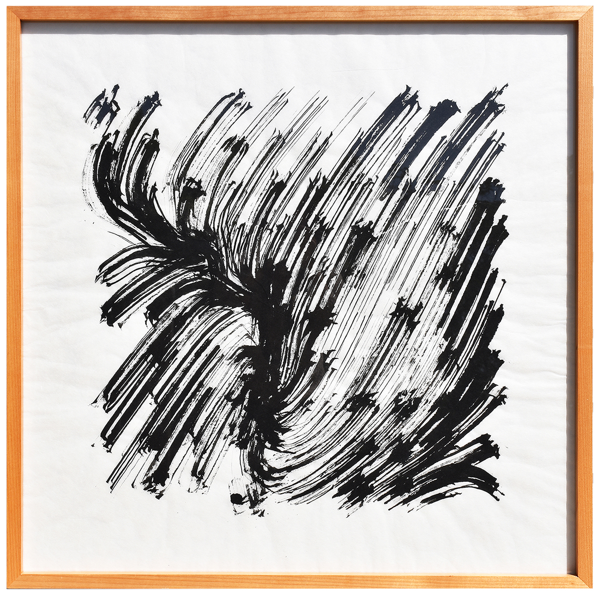
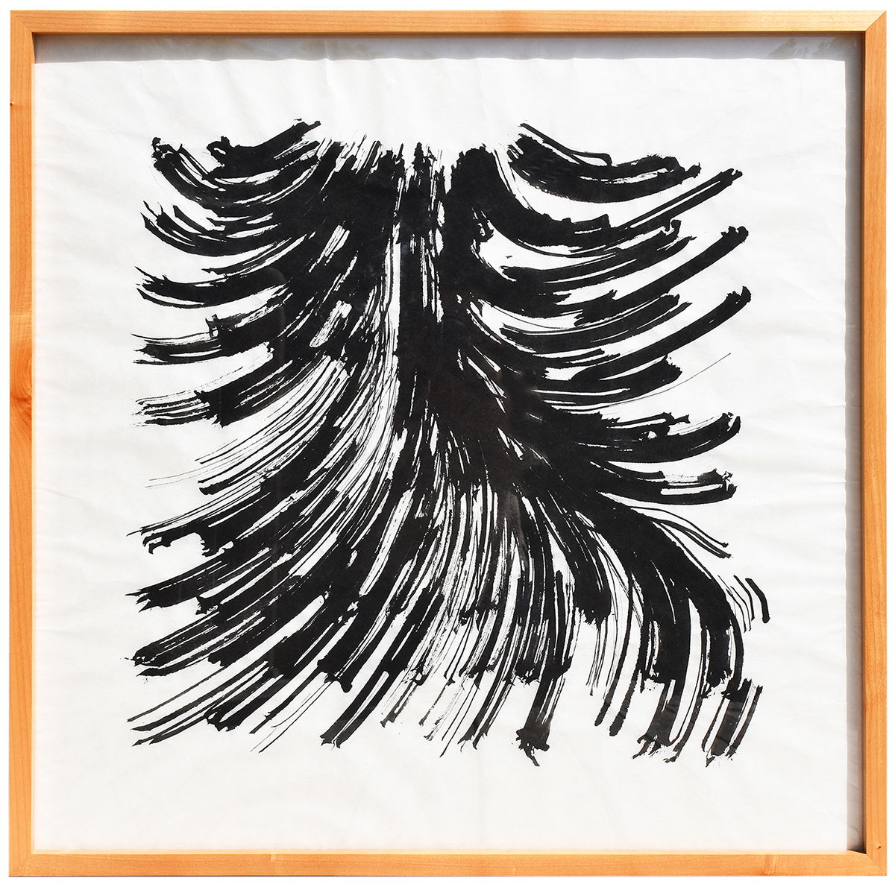
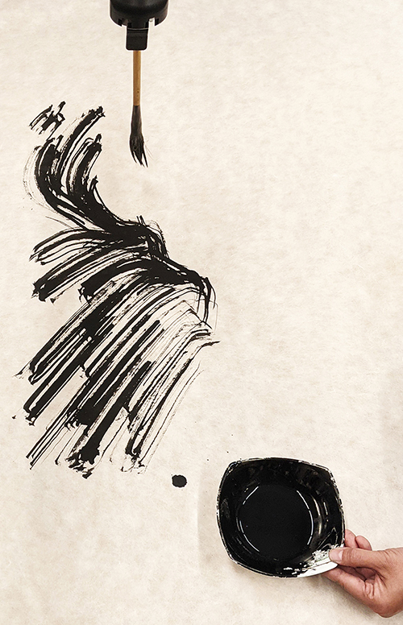

2023, Drawing with a robot



Robots are usually considered tools, devoid of agency and thus creativity. This robotic art performance, Contingent Dreams, explores the generative role of the human artist, algorithm, machine, medium, and environment in art making. In this performance a robot, programmed and assisted by the artist, draws an algorithmic composition in ink. The drawings, derived from recordings of everyday sounds, represent the noise of cities in Louisiana, rendering an ephemeral aspect of the city in unruly mechanical brushstrokes. The drawings come to life as the precise paths of the algorithm are translated into bold, enigmatic brush strokes and anomalous drops of ink. The drawings emerge not just from the imagination of the artist, but also from the sounds of the city, the code of the algorithm, the mechanical motion of the robot, the physics of the brush bristles and ink, and the texture and absorbency of the paper. Each aspect of the performance adds meaningful contingency to the process, resulting in drawings that evoke, as accidents accumulate into meaning, the multiplicity of urban experience.
Hye Yeon Nam & Brendan Harmon
Permanent Collection
LSU Chemistry & Materials Building
Paper
2023 February, TEI, Copernicus Science Centre, Warsaw, Poland